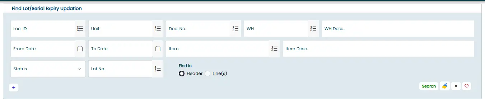
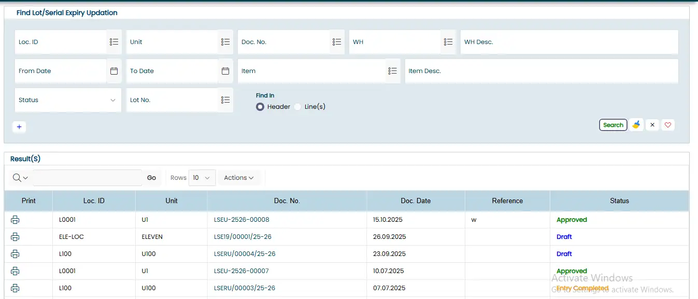
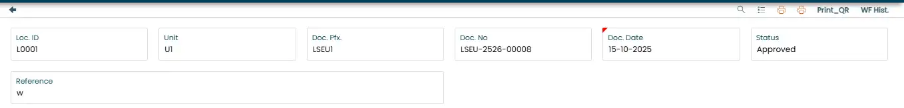
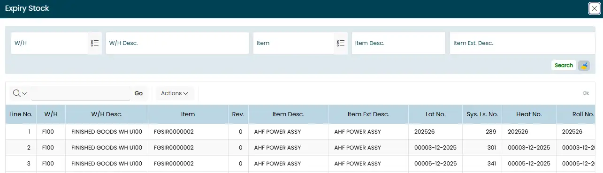
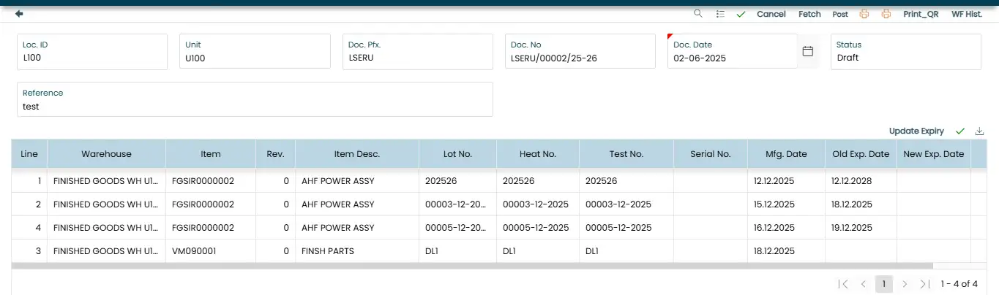
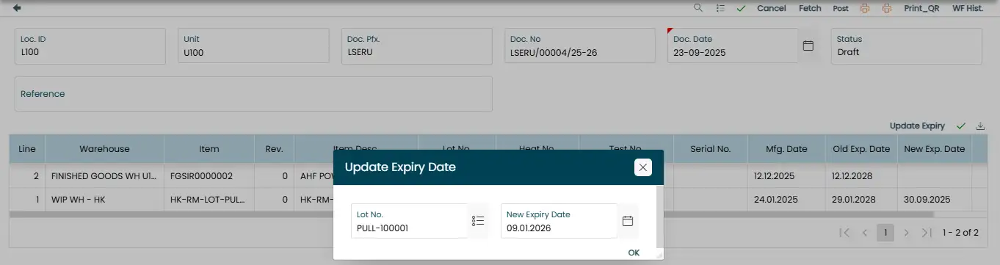
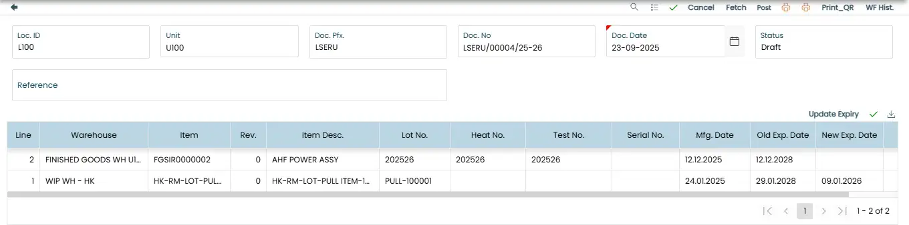
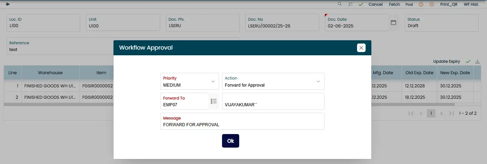

<div data-category="Inventory Control" data-title="Lot/Serial Expiry Updation" data-updated="January 27, 2026" data-contributors="RoadmapIT" data-breadcrumb="Home,Inventory Control,Lot/Serial Expiry Updation">
  <div class="page-content">
    <p>Lot/Serial Expiry Updation refers to the process of updating and managing the expiration dates of inventory items that are tracked by lot or serial numbers</p>
    <p>This screen is used to update Lot/Serial Expiry dates</p>
    <h5>Navigation path:</h5>
    <p class="fs-6">Supply Chain Management \ Inventory \ Transaction \ Lot/Serial Expiry Updation</p>
    
    <ul style="list-style-type: none; align-content: center">
      <li class="mouse-icon">Search screen displays the list of Lot/Serial Expiry Updation with the relevant details</li>
      <li class="mouse-icon">Click on search to filter all the records.</li>
    </ul>
    
    <ul style="list-style-type: none; align-content: center">
      <li class="mouse-icon">User can filter the respective documents by entering the search parameters at the header.</li>
      <li class="mouse-icon">Using search, system displays the results relevant to the search parameters entered.</li>
      <li class="mouse-icon">On -click; the corresponding transaction record will be displayed.</li>
      <li class="mouse-icon">
        Using
        
        icon, entered search parameters can be cleared.
      </li>
      <li class="mouse-icon">
        To close the screen, use
        <i class="bi bi-x fs-4 mx-2 text-danger"></i>
        icon
      </li>
      <li class="mouse-icon">
        Click
        <i class="bi bi-plus fs-4 mx-2 text-primary"></i>
        Add button we can create new Lot/Serial updation entry
      </li>
    </ul>
    
    <ul style="list-style-type: none; align-content: center">
      <li class="mouse-icon">Select the Loc ID</li>
      <li class="mouse-icon">
        Click
        <i class="bi bi-check-lg fs-4 mx-1 text-success"></i>
        button to save the header
      </li>
      <li class="mouse-icon">Click on Fetch button</li>
    </ul>
    
    <ul style="list-style-type: none; align-content: center">
      <li class="mouse-icon">Select the Item and Click Ok</li>
    </ul>
    
    <ul style="list-style-type: none; align-content: center">
      <li class="mouse-icon">Click on Update Expiry Button to update the New. Exp date</li>
    </ul>
    
    <ul style="list-style-type: none; align-content: center">
      <li class="mouse-icon">Select the Lot No</li>
      <li class="mouse-icon">Select the new Expiry Date</li>
      <li class="mouse-icon">Click Ok.</li>
    </ul>
    
    <ul style="list-style-type: none; align-content: center">
      <li class="mouse-icon">Click on Post to send the document for approval.</li>
    </ul>
    
  </div>
</div>
